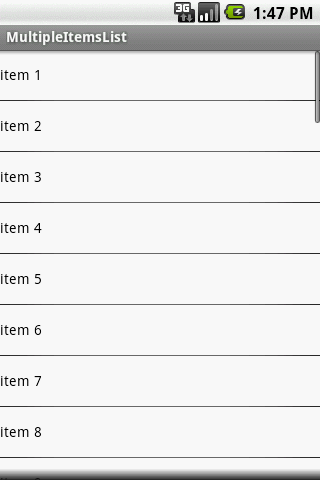
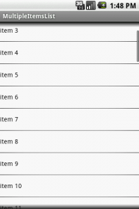
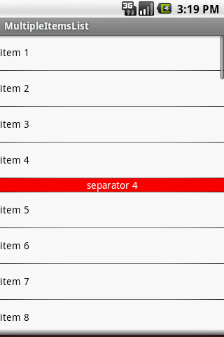

ListView适配器及缓存机制
ListView和适配器的基础：
它是如何工作的：
1、ListView 向适配器说“给我的每个条目一个布局”。
2、一个新的布局创建出来并显示出来。
下一个问题：当我们有10亿个条目的时候怎么办，难道新创建一个新的布局并显示出来吗？答案肯定是“不”。Android会为你把布局缓存起来。
这一部分在Android中称呼为"Recycle - 回收利用"。以下为它的具体实现过程图。

当你有一亿个条目的时候， 只有可看见的View保存在内存中+Recycle过的View
当ListView第一次向适配器请求一个VIew的时候，convertView为null，因此需要新建一个convertView.
当ListView请求一个条目item1的VIew，并且item1已经超出屏幕之外，并进来一个相同类型的条目从底部进入到屏幕里面，这时convertVIew 不为null，而是等于item1。 你只需要获取新的数据装载到该View里面并返回回去。而不必要重新创建一个新的VIew
下面为简单的代码实现：
public class MultipleItemsList extends ListActivity { private MyCustomAdapter mAdapter;
@Override
public void onCreate(Bundle savedInstanceState) {
super.onCreate(savedInstanceState);
mAdapter = new MyCustomAdapter();
for (int i = 0; i < 50; i++) {
mAdapter.addItem("item " + i);
}
setListAdapter(mAdapter);
}
private class MyCustomAdapter extends BaseAdapter {
private ArrayList mData = new ArrayList();
private LayoutInflater mInflater;
public MyCustomAdapter() {
mInflater = (LayoutInflater) getSystemService(Context.LAYOUT_INFLATER_SERVICE);
}
public void addItem(final String item) {
mData.add(item);
notifyDataSetChanged();
}
@Override
public int getCount() {
return mData.size();
}
@Override
public String getItem(int position) {
return mData.get(position);
}
@Override
public long getItemId(int position) {
return position;
}
@Override
public View getView(int position, View convertView, ViewGroup parent) {
System.out.println("getView " + position + " " + convertView);
ViewHolder holder = null;
if (convertView == null) {
convertView = mInflater.inflate(R.layout.item1, null);
holder = new ViewHolder();
holder.textView = (TextView) convertView
.findViewById(R.id.text);
convertView.setTag(holder);
} else {
holder = (ViewHolder) convertView.getTag();
}
holder.textView.setText(mData.get(position));
return convertView;
}
}
public static class ViewHolder {
public TextView textView;
}
}
运行程序并观察发生了什么

getView方法调用了9次。对于可以看见的VIew中，convertView一直为null。
02-05 13:47:32.559: INFO/System.out(947): getView 0 null02-05 13:47:32.570: INFO/System.out(947): getView 1 null
02-05 13:47:32.589: INFO/System.out(947): getView 2 null
02-05 13:47:32.599: INFO/System.out(947): getView 3 null
02-05 13:47:32.619: INFO/System.out(947): getView 4 null
02-05 13:47:32.629: INFO/System.out(947): getView 5 null
02-05 13:47:32.708: INFO/System.out(947): getView 6 null
02-05 13:47:32.719: INFO/System.out(947): getView 7 null
02-05 13:47:32.729: INFO/System.out(947): getView 8 null
拖动以下，并查看输出的状态。

02-05 14:01:31.069: INFO/System.out(947): getView 11 android.widget.LinearLayout@437447d002-05 14:01:31.142: INFO/System.out(947): getView 12 android.widget.LinearLayout@43744ff8
02-05 14:01:31.279: INFO/System.out(947): getView 13 android.widget.LinearLayout@43743fa8
02-05 14:01:31.350: INFO/System.out(947): getView 14 android.widget.LinearLayout@43745820
02-05 14:01:31.429: INFO/System.out(947): getView 15 android.widget.LinearLayout@43746048
02-05 14:01:31.550: INFO/System.out(947): getView 16 android.widget.LinearLayout@43746870
02-05 14:01:31.669: INFO/System.out(947): getView 17 android.widget.LinearLayout@43747098
02-05 14:01:31.839: INFO/System.out(947): getView 18 android.widget.LinearLayout@437478c0
02-05 14:03:30.900: INFO/System.out(947): getView 19 android.widget.LinearLayout@43748df0
02-05 14:03:32.069: INFO/System.out(947): getView 20 android.widget.LinearLayout@437430f8
就像我们所想到的一样，convertView不为null.当item11超出屏幕之后，并进来item21的时候2个convertView为同一个View。
不同的列表条目的View
我们举一个更加复杂点的例子吧，我们加入一个分隔符到ListView中。
你需要做的是：
重写getViewTypeCount() ->它返回不同的View的个数
getItemViewType(int) -> 根据它的位置返回正确的View类型
Create correct convertView (depending on view item type) in getView
下面为代码：
public class MultipleItemsList extends ListActivity { private MyCustomAdapter mAdapter;
@Override
public void onCreate(Bundle savedInstanceState) {
super.onCreate(savedInstanceState);
mAdapter = new MyCustomAdapter();
for (int i = 1; i < 50; i++) {
mAdapter.addItem("item " + i);
if (i % 4 == 0) {
mAdapter.addSeparatorItem("separator " + i);
}
}
setListAdapter(mAdapter);
}
private class MyCustomAdapter extends BaseAdapter {
private static final int TYPE_ITEM = 0;
private static final int TYPE_SEPARATOR = 1;
private static final int TYPE_MAX_COUNT = TYPE_SEPARATOR + 1;
private ArrayList mData = new ArrayList();
private LayoutInflater mInflater;
private TreeSet mSeparatorsSet = new TreeSet();
public MyCustomAdapter() {
mInflater = (LayoutInflater) getSystemService(Context.LAYOUT_INFLATER_SERVICE);
}
public void addItem(final String item) {
mData.add(item);
notifyDataSetChanged();
}
public void addSeparatorItem(final String item) {
mData.add(item);
// save separator position
mSeparatorsSet.add(mData.size() - 1);
notifyDataSetChanged();
}
@Override
public int getItemViewType(int position) {
return mSeparatorsSet.contains(position) ? TYPE_SEPARATOR : TYPE_ITEM;
}
@Override
public int getViewTypeCount() {
return TYPE_MAX_COUNT;
}
@Override
public int getCount() {
return mData.size();
}
@Override
public String getItem(int position) {
return mData.get(position);
}
@Override
public long getItemId(int position) {
return position;
}
@Override
public View getView(int position, View convertView, ViewGroup parent) {
ViewHolder holder = null;
int type = getItemViewType(position);
System.out.println("getView " + position + " " + convertView
+ " type = " + type);
if (convertView == null) {
holder = new ViewHolder();
switch (type) {
case TYPE_ITEM:
convertView = mInflater.inflate(R.layout.item1, null);
holder.textView = (TextView) convertView.findViewById(R.id.text);
break;
case TYPE_SEPARATOR:
convertView = mInflater.inflate(R.layout.item2, null);
holder.textView = (TextView) convertView
.findViewById(R.id.textSeparator);
break;
}
convertView.setTag(holder);
} else {
holder = (ViewHolder) convertView.getTag();
}
holder.textView.setText(mData.get(position));
return convertView;
}
}
public static class ViewHolder {
public TextView textView;
}
}
我们运行并查看以下我们写的代码所输出的东西，我们会发现每隔4个条目它会出现一个分隔符。

查看输出Log，没有什么特别的对于不同的类型 convertView都为Null
02-05 15:19:03.080: INFO/System.out(1035): getView 0 null type = 002-05 15:19:03.112: INFO/System.out(1035): getView 1 null type = 0
02-05 15:19:03.130: INFO/System.out(1035): getView 2 null type = 0
02-05 15:19:03.141: INFO/System.out(1035): getView 3 null type = 0
02-05 15:19:03.160: INFO/System.out(1035): getView 4 null type = 1
02-05 15:19:03.170: INFO/System.out(1035): getView 5 null type = 0
02-05 15:19:03.180: INFO/System.out(1035): getView 6 null type = 0
02-05 15:19:03.190: INFO/System.out(1035): getView 7 null type = 0
02-05 15:19:03.210: INFO/System.out(1035): getView 8 null type = 0
02-05 15:19:03.210: INFO/System.out(1035): getView 9 null type = 1
拖动一下，看看Log中有什么变化
02-05 15:19:54.160: INFO/System.out(1035): getView 10 null type = 002-05 15:19:57.440: INFO/System.out(1035): getView 11 android.widget.LinearLayout@43744528 type = 0
02-05 15:20:01.310: INFO/System.out(1035): getView 12 android.widget.LinearLayout@43744eb0 type = 0
02-05 15:20:01.880: INFO/System.out(1035): getView 13 android.widget.LinearLayout@437456d8 type = 0
02-05 15:20:02.869: INFO/System.out(1035): getView 14 null type = 1
02-05 15:20:06.489: INFO/System.out(1035): getView 15 android.widget.LinearLayout@43745f00 type = 0
02-05 15:20:07.749: INFO/System.out(1035): getView 16 android.widget.LinearLayout@43747170 type = 0
02-05 15:20:10.250: INFO/System.out(1035): getView 17 android.widget.LinearLayout@43747998 type = 0
02-05 15:20:11.661: INFO/System.out(1035): getView 18 android.widget.LinearLayout@437481c0 type = 0
02-05 15:20:13.180: INFO/System.out(1035): getView 19 android.widget.LinearLayout@437468a0 type = 1
02-05 15:20:16.900: INFO/System.out(1035): getView 20 android.widget.LinearLayout@437489e8 type = 0
02-05 15:20:25.690: INFO/System.out(1035): getView 21 android.widget.LinearLayout@4374a8d8 type = 0
分隔符的convertView为Null，直到第一个分隔符看见为止。当它超出屏幕时，View还会缓存到Recycler中，以使convertView显示出来。